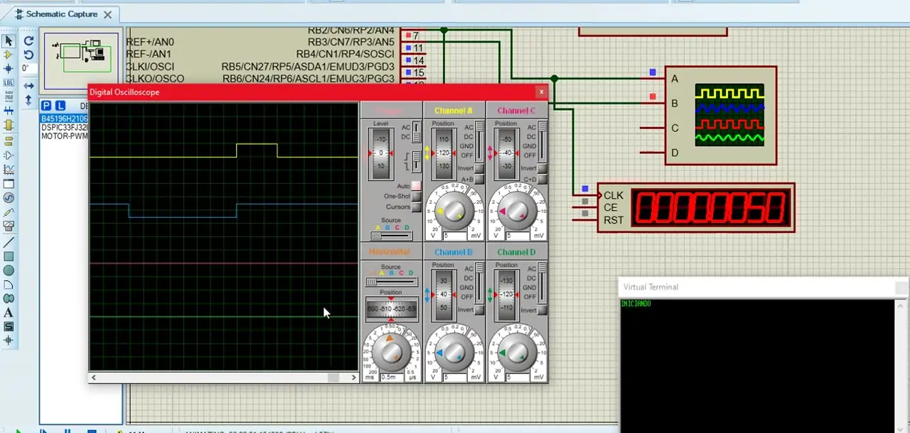

El dsPIC33FJ32MC202 tiene dos salidas de output compare, OC1 y OC2, que sirven como PWM normal (los de motor control tienen además un PWM propio, que se ve después).
En Proteus se ponen un servo y un osciloscopio en las salidas.
Se crea el proyecto en MPLAB X con oscilador interno FRC con PLL y se organiza en una carpeta de librerías: una para interrupciones (habilita, deshabilita y las trampas de error) y otra para el PWM básico. Con la hoja de Excel se calcula que para 50 Hz a 80 MHz sirve el prescaler de 64 con PR2 de 12500. OC1 y OC2 se remapean a RP2 y RP3. Con una función map se pasa de ángulo (−90 a 90) a ancho de pulso de 1 a 2 ms, y con otra se da el porcentaje para motores DC. Luego se cambia el mapeo por una ecuación sacada de una línea de tendencia en Excel, que es más rápida, y se termina con un barrido del servo.

El dsPIC33FJ32MC202 tiene dos salidas de output compare, OC1 y OC2, que sirven como PWM normal (los de motor control tienen además un PWM propio, que se ve después).
En Proteus se ponen un servo y un osciloscopio en las salidas.
Se crea el proyecto y el archivo .c. Esta vez el oscilador es el interno FRC con PLL, sin oscilador primario, con OSC2 como pin digital y remapeo múltiple.
// FOSCSEL
#pragma config FNOSC = FRCPLL // Oscillator Mode (Internal Fast RC (FRC) w/ PLL)
#pragma config IESO = OFF
// FOSC
#pragma config POSCMD = NONE // Primary Oscillator Disabled
#pragma config OSCIOFNC = ON // OSC2 Pin has digital I/O function
#pragma config IOL1WAY = OFF // Allow Multiple Re-configurations
#pragma config FCKSM = CSDCMDSe crea una carpeta Librerias con los archivos de interrupciones y de PWM, y se agregan al proyecto desde Source Files. Así el programa principal queda más ordenado.
#include "libpic30.h"
#include<uart.h>
#include "pps.h"// incluye libreria de pines remapeables
#include "Librerias\Config_Interrupcion.h"
#include "Librerias\CONFIG_PWM_B.h"
#include <timer.h>Trae las trampas de error (falla de oscilador, de pila, matemática), que por ahora solo limpian su bandera, y las funciones habilita() y deshabilita(), que cambian la prioridad de la CPU.
Con 80 MHz y 50 Hz (20 ms, lo que necesita un servo) la hoja dice que sirven los prescaler de 64 o 256. Con 64 hay que cargar 0B10 en TCKPS y PR2 vale 12500.
Configura el Timer2 y los dos módulos. OCTSEL en 0 usa el Timer2; en 1 usaría el Timer3. El ancho inicial es 6250, la mitad de 12500, o sea 50 %.
#include "xc.h"
void pwm_init_basico()
{
//configuracion timer 2
TMR2=0;
PR2=12500;// para 50HZ = 20 ms manejo de servos
//limpia el registro de configuracion
T2CON=0;
//preescalador 64
T2CONbits.TCKPS=0B10;
T2CONbits.TON=1; // prende el timer 2
//modulo pwm oc1
OC1CON=OC2CON=0;
OC1CONbits.OCTSEL= OC2CONbits.OCTSEL=0; //trabaja con timer2 sino timer 3
OC1RS=OC1R=OC2RS=OC2R=6250; //registro ancho pulso
//lo habilita como PWM
// ...
}PLLFBD pasa a 41 porque ahora se parte del FRC de 7.37 MHz. TX va a RP0, OC1 a RP2 y OC2 a RP3; puede ser cualquier pin remapeable.
//VELOCIDAD= 4M*M/(N1*N2)= 4M*80/4=80M
CLKDIVbits.PLLPRE = 0; // N1 = 2
CLKDIVbits.PLLPOST = 0; // N2 = 2
PLLFBD=41; // selecciona M=40; siempre lo deseado menos 2; CRISTAL INTERNO=7.37MHz
AD1PCFGL=0xffff;// todo digital
//puertos como salida
TRISB=0x0;
TRISA=0x0;
LATB=0;
// configuracion de remapeables
PPSUnLock;// desbloquea configuracion de perifericos
iPPSOutput(OUT_PIN_PPS_RP0,OUT_FN_PPS_U1TX); // rp0 como salida a u1tx
iPPSOutput(OUT_PIN_PPS_RP2,OUT_FN_PPS_OC1); // rp2 como salida a pwm1
iPPSOutput(OUT_PIN_PPS_RP3,OUT_FN_PPS_OC2); // rp3 como salida a pwm2
PPSLock;// bloquea configuracion perifericoCon solo llamar pwm_init_basico y habilitar interrupciones, el while vacío ya da las dos señales: 50 Hz al 50 %. El PWM corre por hardware, sin cargar el programa.
config1= UART_EN & UART_IDLE_CON & UART_IrDA_DISABLE & UART_MODE_SIMPLEX &
UART_UEN_00 & UART_DIS_WAKE & UART_DIS_LOOPBACK & UART_DIS_ABAUD &
UART_BRGH_SIXTEEN & UART_NO_PAR_8BIT & UART_1STOPBIT;
config2= UART_INT_TX_BUF_EMPTY & UART_TX_ENABLE & UART_INT_RX_3_4_FUL &
UART_ADR_DETECT_DIS & UART_RX_OVERRUN_CLEAR & UART_IrDA_POL_INV_ZERO &
UART_SYNC_BREAK_DISABLED;
OpenUART1 (config1, config2, 259);// se saca de excel
Uart1_write_text_const("INICIANDO\r\n");
pwm_init_basico();
habilita();
while (1)
{
// ...
}ser_min y ser_max dan el rango del servo en milisegundos (1 a 2 ms; si el suyo es distinto, se cambia aquí). La función map hace la línea recta entre dos puntos.
const float ser_min=1.0; // tiempo minimo en milisegundo de movimiento del servo
const float ser_max=2.0; // tiempo maximo en milisegundo de movimiento del servo
signed char cuenta;
float salida1, salida2; //salidas pwm
float map(float x_in, float x1_, float y1_, float x2_, float y2_)
{
float pendiente;
pendiente=(y2_ - y1_) / (x2_ - x1_);
pendiente=pendiente*(x_in- x1_);
pendiente=pendiente+y1_;
return( pendiente);
}servo1 convierte el ángulo a milisegundos y lo pasa a OC1RS sobre los 20 ms del periodo. pwm1 da el porcentaje sobre PR2 para un motor DC. Lo mismo con servo2 y pwm2 para OC2.
void servo1(float angulo)
{
angulo=map(angulo,-90.0,ser_min,90.0,ser_max);
OC1RS=angulo*(float)PR2/20.0;
}
void pwm1(float ancho)
{
OC1RS=ancho*(float)PR2/100.0;
}
void servo2(float angulo)
{
angulo=map(angulo,-90.0,ser_min,90.0,ser_max);
OC2RS=angulo*(float)PR2/20.0;
}
void pwm2(float ancho)
{
OC2RS=ancho*(float)PR2/100.0;
}Con servo1(90) el pulso mide 2 ms (4 divisiones) y con pwm2(80) la otra salida queda casi al 80 %.
En Excel: 1 ms con prescaler 64 son 625 cuentas y 2 ms son 1250. Con los puntos (−90, 625) y (90, 1250) se saca la línea de tendencia y su ecuación. Es más rápido que map y gasta menos recursos.
void servo1_ecu(float angulo)
{
OC1RS=3.4722*angulo + 937.5;
}El servo va de −90 a 90 de 5 en 5 grados cada 50 ms y vuelve a empezar; el motor DC queda al 20 %. En el osciloscopio se ve cómo cambia el ancho del pulso.
habilita();
while (1)
{
// servo1_ecu(0);
servo1(-90); // angulo 1ms
for (cuenta=-90;cuenta<=90;cuenta+=5)
{
// servo1(cuenta);
servo1_ecu(cuenta);
__delay_ms(50);// velocidad paso a paso
}
pwm2(20); //porcentaje
}